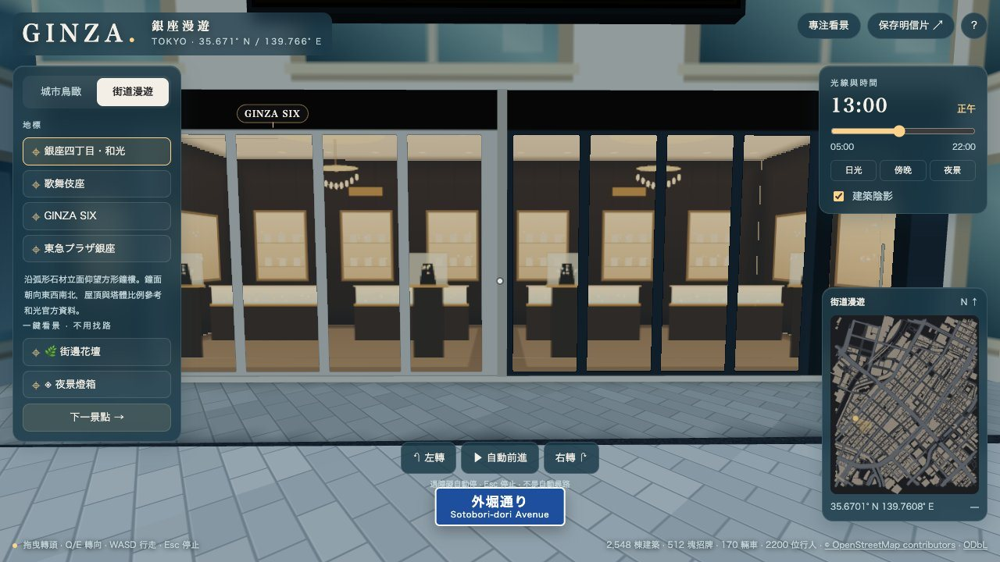
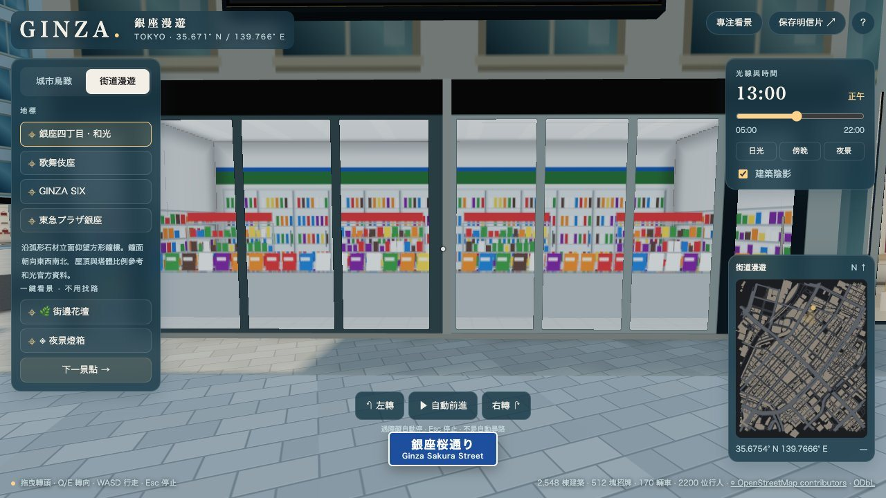
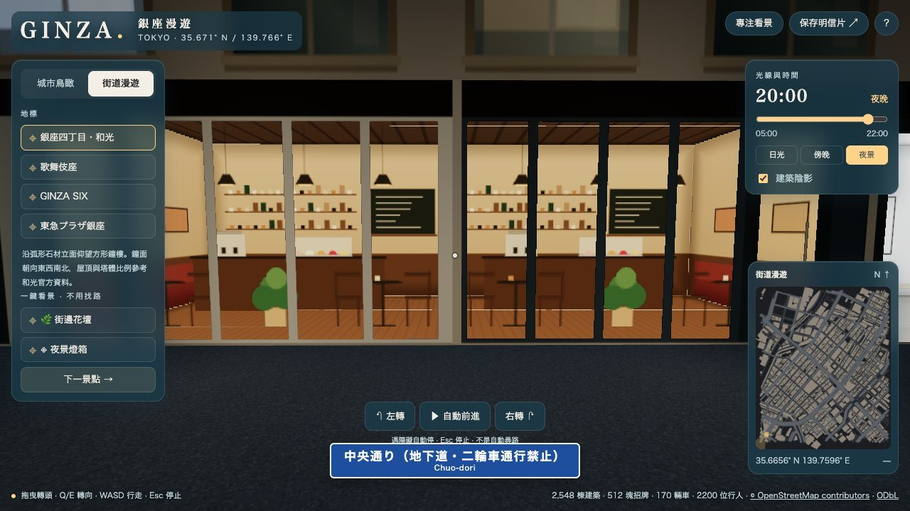
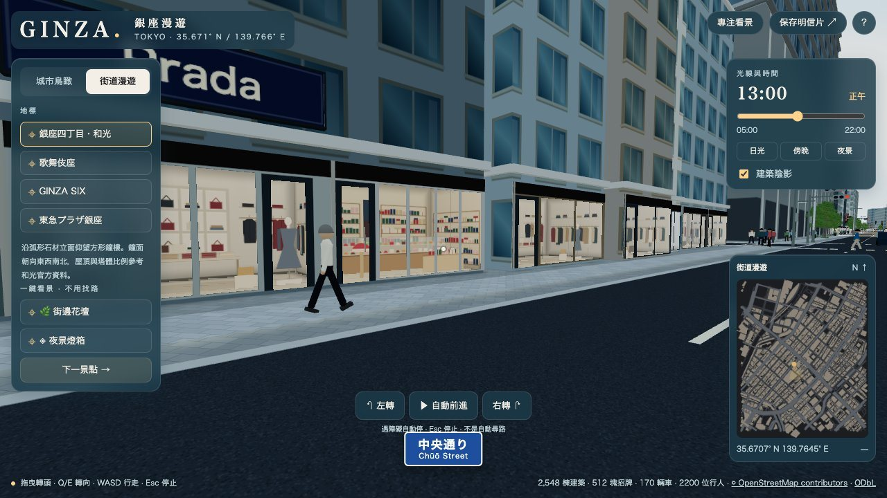

流程 · ③
③ 店面與店內縱深
沿街一樓的櫥窗，以及玻璃後隨視角變化的店內陳列。2026-10-11 新增。
人工（維護者／使用者操作）
自動腳本
LLM（本專案未使用）
檔案 / 儲存
外部 API
沒有店家資料的牆面，整面牆共用一個依比例抽樣的業態，避免一間店被切成不同業態的小隔間。
解決什麼問題
過去櫥窗是一張平面圖，走近或斜看都像貼紙。真的挖空建築做室內，會讓上千面牆的幾何變複雜。現在的做法是：玻璃只是一片面，但畫面上會「算出」玻璃後一間約 3.6 m 深的房間，斜看時後牆、側牆、地板與家具會正確移動。
怎麼處理
房間
3.6 m 深
高 3.5 m；寬＝店面寬，寬店每約 5.5 m 重複一組陳列
層次
後牆 + 2 層
櫥窗陳列（0.85 m）＋ 櫃台桌子（2.05 m）
業態
12 種
依附近 OSM 店家分類，或整面牆抽樣
額外幾何
0
仍是一片玻璃；不能走進店內
| 業態 | OSM 分類例 | 典型陳列（參考銀座同業態常見擺放） |
|---|---|---|
| 精品服飾 | clothes, shoes, bag | 櫥窗兩側人台、中央摺疊台、後牆燈箱壁龕放包、掛衣桿 |
| 珠寶鐘錶 | jewelry, watches | 柱形玻璃罩展示台、腰高亮燈玻璃櫃、壁面燈箱、水晶吊燈 |
| 甜點 | confectionery, bakery, deli | 全寬冷藏玻璃櫃兩層蛋糕、禮盒層架、後方暖簾 |
| 喫茶 | cafe, fast_food | 窗邊小圓桌曲木椅、吧台咖啡機、黑板菜單、吊燈 |
| 餐廳酒吧 | restaurant, bar, pub | 白桌布雙人桌、背光酒架、吧台高腳椅 |
| 化妝品 | beauty, chemist | 白色試用島台、色號格架、品牌燈箱 |
| 書店文具 | books, stationery | 高書架、平台疊書、窗邊筆記本陳列 |
| 畫廊 | gallery, art, museum | 白牆掛畫與投射燈、長凳、小雕塑 |
| 便利店 | convenience, supermarket | 沿窗雜誌架、貨架端面、後方飲料冷藏櫃 |
| 生活雜貨 | gift, houseware, knives | 階梯陳列台、木層架陶器、刀具有孔板 |
| 銀行窗口 | bank, travel_agency | 窗口櫃台與螢幕、等候椅、ATM |
| 美髮 | hairdresser | 鏡台燈條、背向街道的美髮椅 |

常見問題：店名與業態對不上時，可能是 6 m 內有別家店的點位。
下一步：想加 X 改哪

常見問題：若每節各自有側牆，代表相鄰分節業態不同。
下一步：檔案地圖

常見問題：夜間太亮或太暗：調整店內日夜亮度係數。
下一步：故障排查

常見問題：非常貼近斜看時，家具是薄片。
下一步：④ 時間與夜景
考慮了哪些情況
| 情境 | 系統怎麼應對 |
|---|---|
| 附近沒有店家點位 | 整面牆共用一個業態，依目測比例抽樣（服飾最多，其次喫茶、珠寶…）；不抽便利店、美髮這類需要明確資料的業態 |
| 同一面牆有兩家不同店 | 依各分節最近的店家決定；不同業態之間有側牆隔開 |
| 店面很窄（< 5.5 m） | 取陳列中段，不把家具壓扁 |
| 店面很寬 | 每約 5.5 m 重複一組陳列，不把家具拉長 |
| 和光、GINZA SIX、GINZA PLACE | 不套用通用店面，由實景參考立面處理 |
| 白天 vs 夜晚 | 白天店內約為夜間亮度一半並帶玻璃反光；便利店／銀行偏冷白光 |
為什麼這樣設計
這種「在玻璃上算出房間」的做法是遊戲常用的室內貼圖技巧：成本跟店面數量無關、不改建築外形、一次繪製。代價是不能進店、店內不接收建築陰影，近距離斜看時家具是平面。截圖清單（給維護者）
| 截圖 | 網址參數 | 對應源檔案 |
|---|---|---|
| shops/01-oblique-day | ?hour=13#@-92,60,170,-3 | web/shop-interiors.js, web/shop-paint-retail.js, web/streetscape.js |
| shops/02-jewelry-day | ?hour=13#@-423.1,121.9,131,-4 | web/shop-paint-retail.js, web/shop-interiors.js |
| shops/03-convenience-day | ?hour=13#@98.0,-469.3,200,-4 | web/shop-paint-food.js, web/shop-types.js |
| shops/04-cafe-night | ?hour=20#@-533.0,618.1,215,-4 | web/shop-paint-food.js, web/shop-interiors.js |